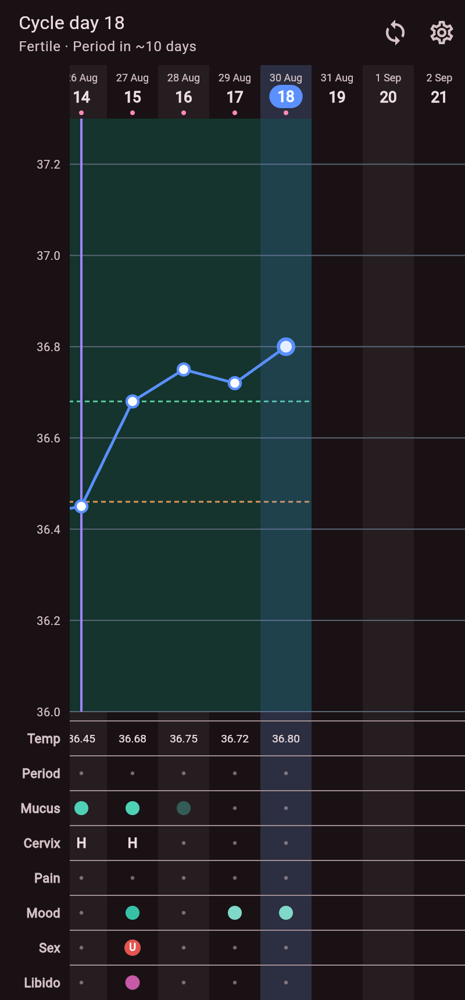
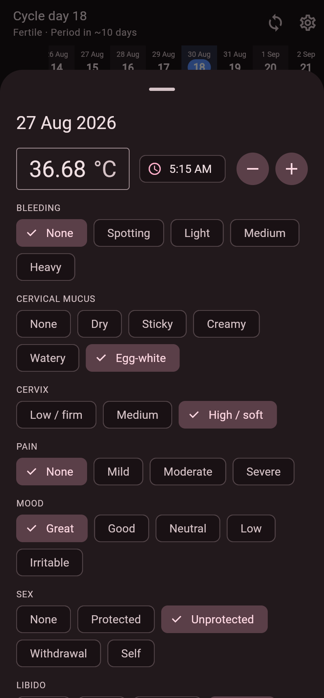
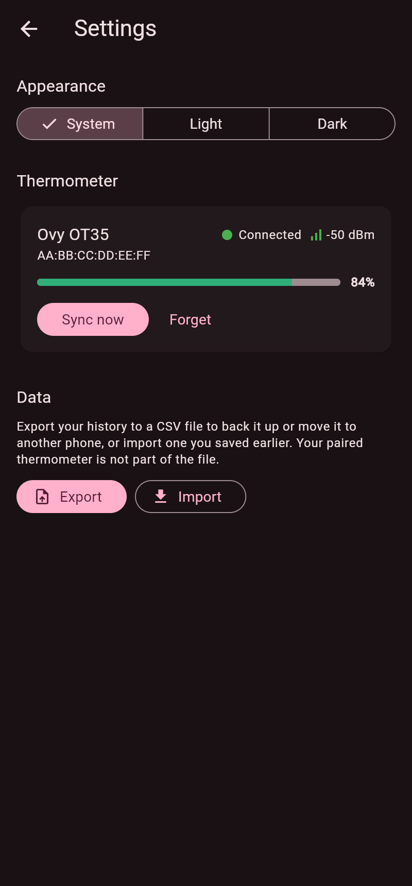

Reads your temperature
Connects to the Ovy OT35 over Bluetooth and pulls in your morning readings automatically - or lets you enter them by hand.
Rise is a calm, private app for tracking your cycle. It gives a second life to the Ovy OT35 thermometer on phones the official app no longer supports - and it works just as well on its own, without any device.
Free and open source. No account. No cloud.
Maybe you have an Ovy OT35 - a small Bluetooth thermometer that measures your temperature each morning and sends it to your phone. It is a lovely little device, and it still works perfectly.
Then one day the official app stopped opening. Not because anything broke, but because a newer version now asks for a more recent Android phone than yours. The thermometer is fine. Your phone is fine. But the app that connects them has moved on and left you behind.
That is how a working device quietly turns into a drawer full of e-waste - not because it failed, but because the software stopped talking to it. We did not think that was fair, so we built Rise: an app that speaks to the OT35 directly and puts your measurements back where they belong, with you.
You do not need the Ovy device - or any device - to use Rise. You can type your morning temperature and the other daily signs in by hand, just like a paper chart, and the app does the rest. The thermometer simply saves you the typing.
Everything a symptothermal chart needs, in one quiet place.
Connects to the Ovy OT35 over Bluetooth and pulls in your morning readings automatically - or lets you enter them by hand.
Temperature sits alongside the other daily signs so you can see the full picture at a glance.
Follows the well-established Sensiplan method to open and confirm the fertile window from your own readings.
Everything lives on your phone and works fully offline. No account to make, nothing sent to a company's servers.
A calm, private view of your whole cycle.



Rise is built by people who did not want to throw a good device away. There is a place for you here - whether or not you write code.
Try Rise with your thermometer and older phone, and tell us what worked and what did not. Real devices in real hands are what make it solid.
Help Rise speak more languages, or smooth out wording so it stays clear and kind. No programming needed.
Open an issue with a rough edge, a wish, or a quirk of your device. Every report makes the next release better.
Rise is a Flutter app under the GPL. Pick up an issue, improve the Bluetooth sync, or add a feature you have always wanted.
The first release is on its way. The download link will appear here.
Free forever, and open source.